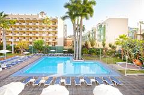
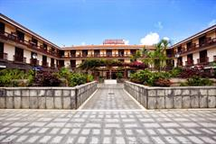
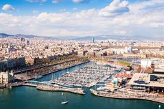
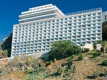
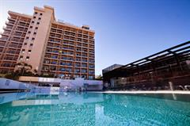
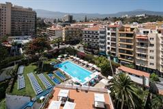
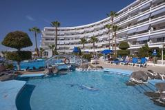

Головна
Тури
Послуги
Про нас
Контакти

Be Smart Florida Plaza
Апартаменти Be Smart Florida Plaza розташовані в центрі міста Пуерто-де-ла-Круса, на острові Тенеріфе. До послуг гостей цього чудового комплексу апартаментів відкритий басейн. В усіх просторих апартаментах є добре обладнана кухонна зона та ванна кімната. У вітальні встановлено телевізор із супутниковими каналами. Надається безкоштовний Wi-Fi. За запитом на стійці реєстрації відвідувачам буде запропоновано фен.
Ціна: $1000

BE LIVE ADULTS ONLY TENERIFE
Готель Be Live Adults Only Tenerife розташований за 270 метрів від пляжу Хардін у місті Пуерто-де-ла-Крус. До послуг гостей спільний басейн і ресторан. Стійка реєстрації гостей готелю працює цілодобово. Усі номери готелю Be Live Adults Only Tenerife оформлені в сучасному стилі та мають паркетну підлогу та оснащені кондиціонером. Власна ванна кімната з душем укомплектована феном і безкоштовними туалетно-косметичними засобами. З деяких номерів відкривається вид на море.
Ціна: $1000

Alua Tenerife
Готель Alua Tenerife розташований за 300 метрів від пляжу Плайя-Хардін. Прогулянка до Пуерто-де-ла-Крус займає 10 хвилин. До послуг гостей 2 відкритих басейни (1 для дітей та 1 для дорослих), ресторан «шведський стіл» та безкоштовне поле для гольфу.
Ціна: $1000

BEST SEMIRAMIS
Готель Best Semiramis в Пуерто де ла Круз розташований на скелі, що височіє над Атлантичним океаном. Готель надає номери з балконами, спа-центр і 2 відкритих басейни, оточених садами. Номери у готелі Best Semiramis обладнані кондиціонером, декоровані у стилі мінімалізму та мають паркетну підлогу. У кожному номері є супутникове телебачення та міні-бар.
Ціна: $1000

Be Live Experience Orotava
Готель Be Live Experience Orotava розташований у місті Пуерто-де-ла-Крус, за 200 метрів від пляжу та комплексу басейном Lago Martianez. До послуг гостей сучасні номери з видом на море чи гори. Усі номери мають балкон, а з вікон більшості номерів відкривається чудовий краєвид на море або гору Тейде. Крім того, у розпорядженні гостей кондиціонер, Wi-Fi та телевізор із супутниковими каналами.
Ціна: $1000

CATALONIA LAS VEGAS
Цей чудовий готель зручно розташований поруч із озером Мартіанес. З території відкривається чудовий краєвид на вулкан Тейде. На всій території є безкоштовний Wi-Fi. Готель знаходиться в центрі міста Пуерто-де-ла-Крус, навпроти таксі. Поряд із будівлею зупиняються автобуси, на яких можна дістатися будь-якого куточка острова.
Ціна: $1000

HOVIMA ATLANTIS
Готель HOVIMA Atlantis знаходиться всього за 50 метрів від пляжу Ла-Пінта на узбережжі Коста-Адесі. Вам пропонуються номери-студіо та апартаменти з терасами. Готель оточений садом і має великий відкритий плавальний басейн і сонячну терасу, що виходить на Атлантичний океан.
Ціна: $1000